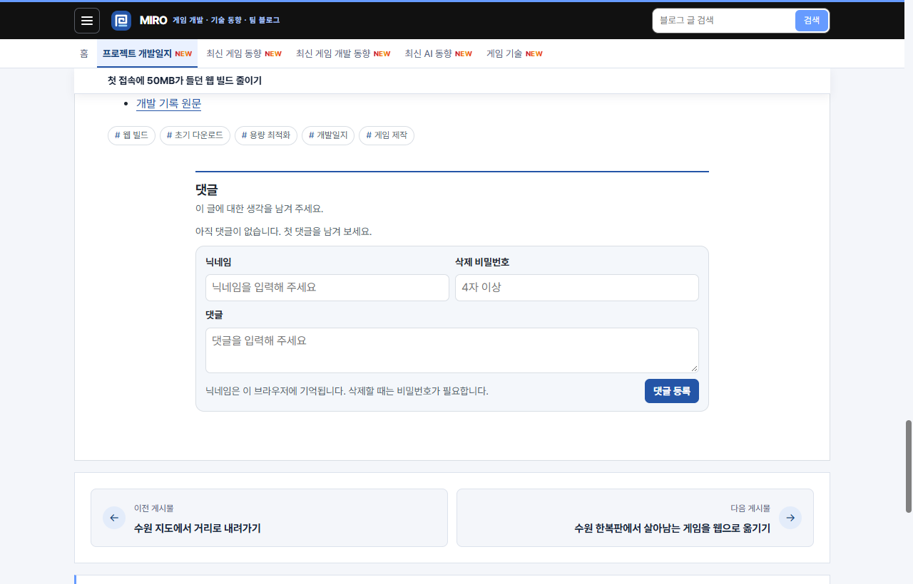
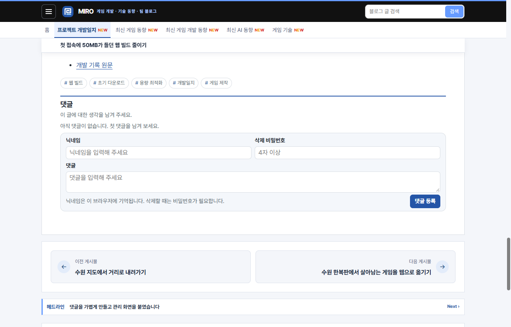
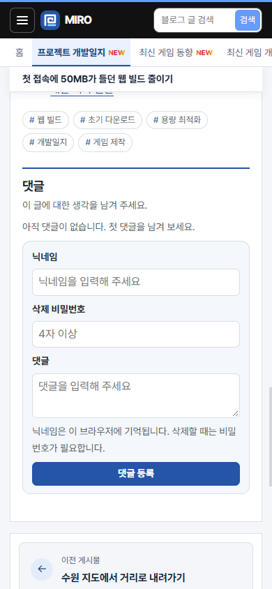
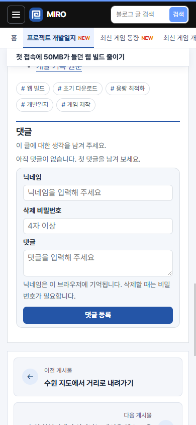

Tracefolio REPORTS & ISSUES
Tracefolio REPORTS & ISSUES댓글 폭을 본문에 맞추고 세로 크기 줄이기
완료댓글 폼이 본문 좌우에 정렬되며 입력칸과 위아래 여백이 줄었습니다.
작업 결과
공개 게시글에서 댓글 폭이 본문과 일치하고, 폼의 높이가 데스크톱에서 약 37px, 모바일에서 약 45px 줄었습니다.
변경 내용
적용 내용
comments/style.css에서 720px 최대 폭과 가운데 정렬을 제거해 댓글이 본문 안쪽 폭을 채우도록 했습니다.- 상하 여백, 폼 내부 간격, 입력 높이를 줄였습니다. 모바일 입력 배치는 기존 한 열을 사용합니다.
.comments {
--comment-tint: color-mix(in srgb, var(--accent) 5%, var(--panel));
margin-block: 18px 12px;
padding-block-start: 8px;
border-top: 2px solid var(--accent);
}
.comments-form :is(input, textarea) { padding-block: 4px; line-height: 1.35; }
대화 기록
- 사용자 (시각 미기록) · “이걸 좁혀달라는게 아니라 사이즈를 줄여달라는거지 가로를 줄이면 어캄”
- AI (21:24 KST) · 본문 폭을 복원하고 입력칸 높이와 세로 여백을 줄이기로 했습니다.
- AI (21:26 KST) · 공개 페이지에서 가로 정렬과 높이 감소를 확인했습니다.
검증
- 데스크톱 1280px 화면에서 댓글 폭 720→966px, 본문 폭 966px. 폼 높이 234→197px.
- 모바일 390px 화면에서 본문과 댓글 폭 모두 326px. 폼 높이 363→317px. 두 화면 모두 가로 스크롤이 생기지 않았습니다.




남은 사항
레이아웃 변경 작업은 완료됐습니다. 전역·전용 지침에 추가할 새 규칙은 없었습니다.
작업 시간
- 제안 시간: 3~6분
- 실제로 완료된 시간: 운영 배포·검증 약 2분 1초. 2026-11-10 21:24:20 시작, 21:26:21 KST 완료.
- XERJ: 미사용 — 지정 검색 도구 미사용.